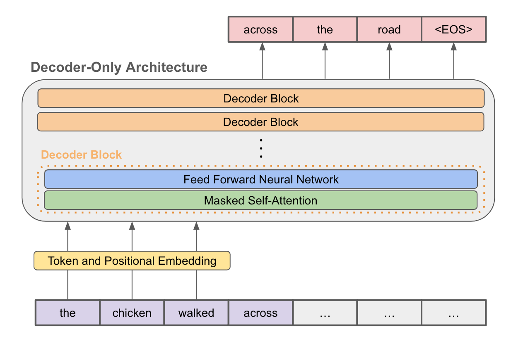
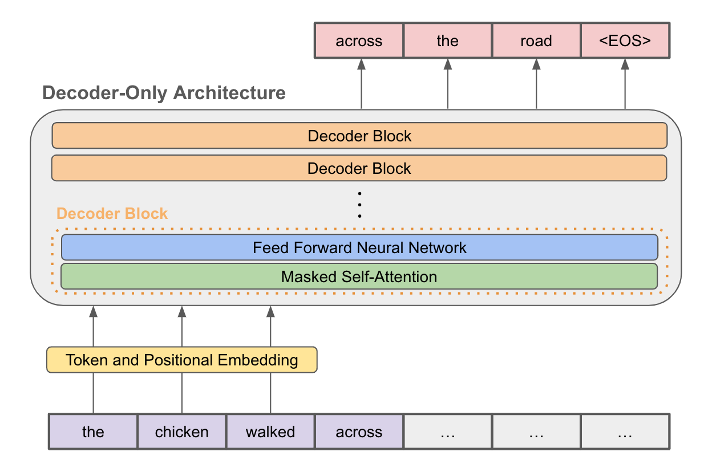

Natural Language Processing Projects
Automated Essay Scoring with Transformers
Automated Essay Scoring (AES) systems are gaining in popularity due to the time-consuming and inconsistent nature of manual grading. While conventional approaches use various hand-engineered features given to machine learning models,there is a growing popularity and trend towards transformer architectures and deep learning models. Furthermore, they reduce the time taken to hand-engineer features while also improving accuracy. Therefore, our method proposes the use of transformer embeddings with various deep learning and machine learning modelsfor the task of automated essay scoring.

Project Link: Automated Essay Scoring


GPT from Scratch
Built a language model from scratch focusing on a character-level language model based on the Transformer architecture. The model is trained on a dataset of Shakespeare's plays and learns to predict the next character in a sequence.
Project Link: GPT from Scratch
 

Computer Vision
Super Resolution using Cascading Residual Network (CRN) Architecture
This project implements an advanced Image Enhancement technique using Super Resolution, based on the model introduced in the paper 'Fast, Accurate, and Lightweight Super-Resolution with Cascading Residual Network.' It addresses the challenge of high computational costs in Single Image Super-Resolution tasks by proposing an efficient and lightweight model. The key innovation involves a cascading mechanism within a residual network, facilitating efficient information transfer to higher layers. Additionally, residual-E blocks, employing group convolution, reduce computational operations (MultiAdds). Through comprehensive evaluations on standard datasets like Set5 and Urban100, the model consistently matches state-of-the-art performance. Leveraging insights from the paper, this project delivers an enhanced solution for improving image quality through super-resolution.
Project Link: Super Resolution using CRN Architecture
Shadow removal via Shadow Decomposition
This project aims to use deep learning method for shadow removal. Inspired by physical models of shadow formation, they use a linear illumination transformation to model the shadow effects in the image that allows the shadow image to be expressed as a combination of the shadow-free image, the shadow parameters, and a matte layer. The model uses two deep networks, namely SP-Net and M-Net, to predict the shadow parameters and the shadow matte respectively.
Project Link: Shadow removal via Shadow Decomposition

Scan Matching using Iterative closest point
I have implemented the Iterative Closest Point (ICP) algorithm, and used it to estimate the rigid transformation that optimally aligns two 3D point clouds. The given two point clouds X, Y ⊂ ℝd have an initial guess (to, Ro) ∈ SE(d) for the optimal rigid registration y = Rx + t aligning X to Y.
Project Link: Iterative Closest Point
Robotics
Autonomous Ground Robot For Reconnaissance
In this project, we deploy an autonomous reconnaissance system using a 2-wheeled differential drive robot. Our focus lies in optimizing the environment mapping algorithm to aid in rescue missions. Utilizing a 360° LiDAR for localization and mapping, and a Raspberry Pi Camera for tag detection, our robot scans the environment for April tags (serving as substitutes for victims). The gmapping based SLAM and Rapidly Exploring Random Tree (RRT) based exploration are employed for mapping and exploration.
Project Link: Autonomous Ground Robot For Reconnaissance